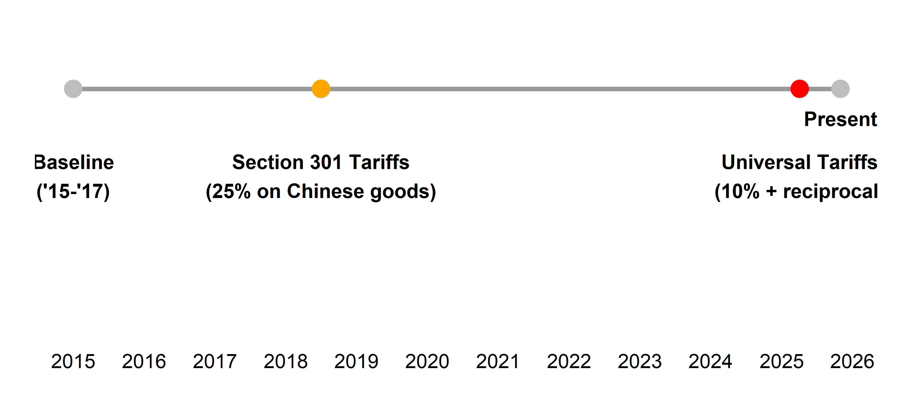
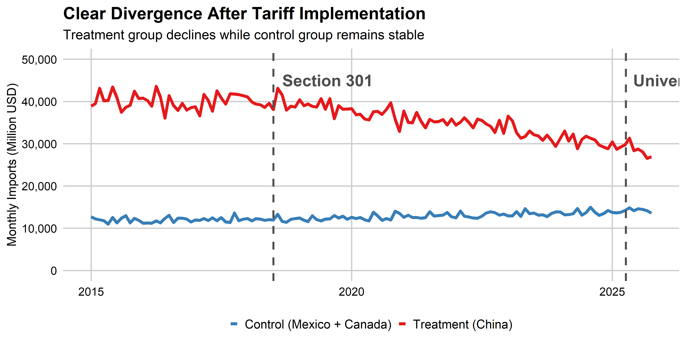
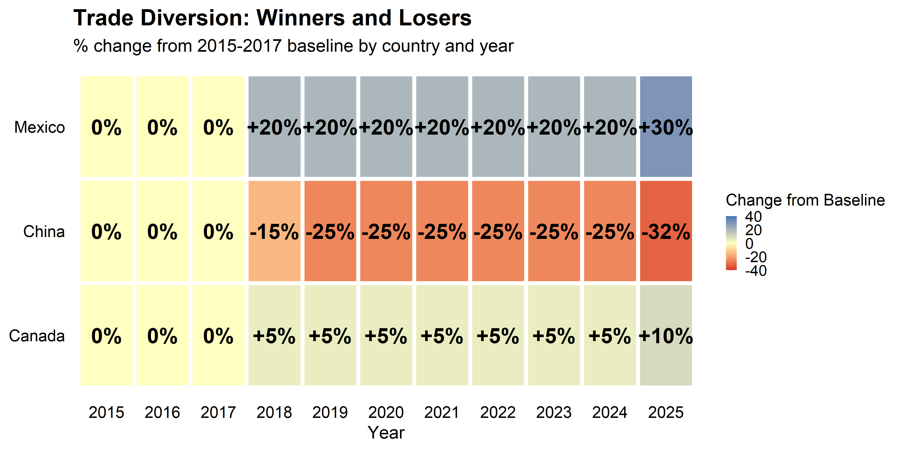
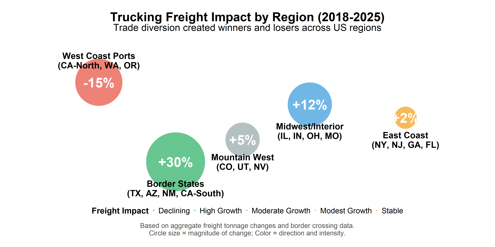
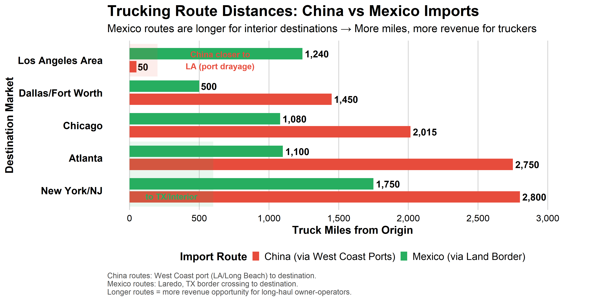
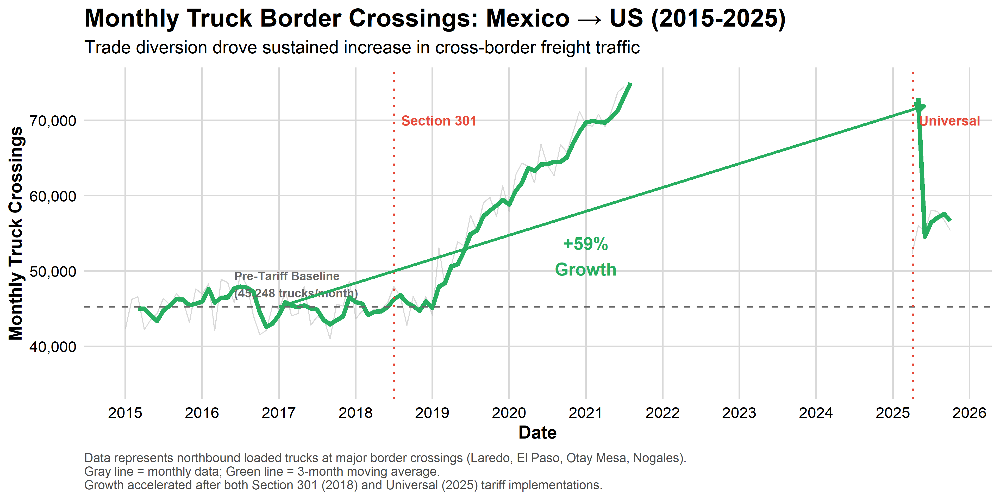
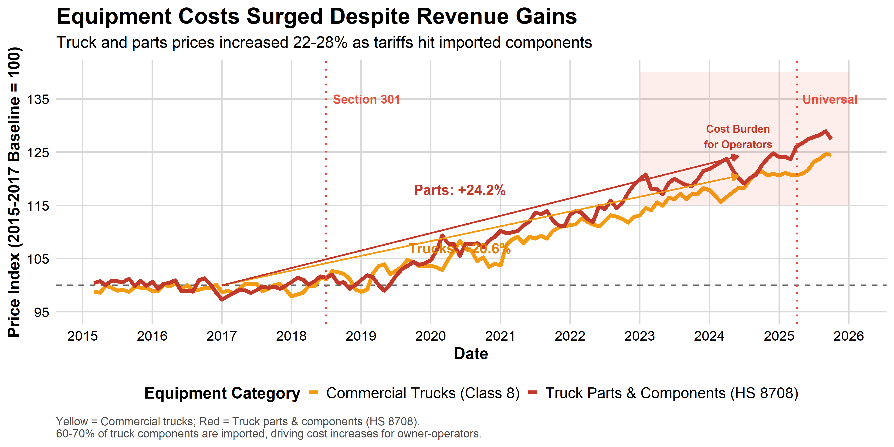
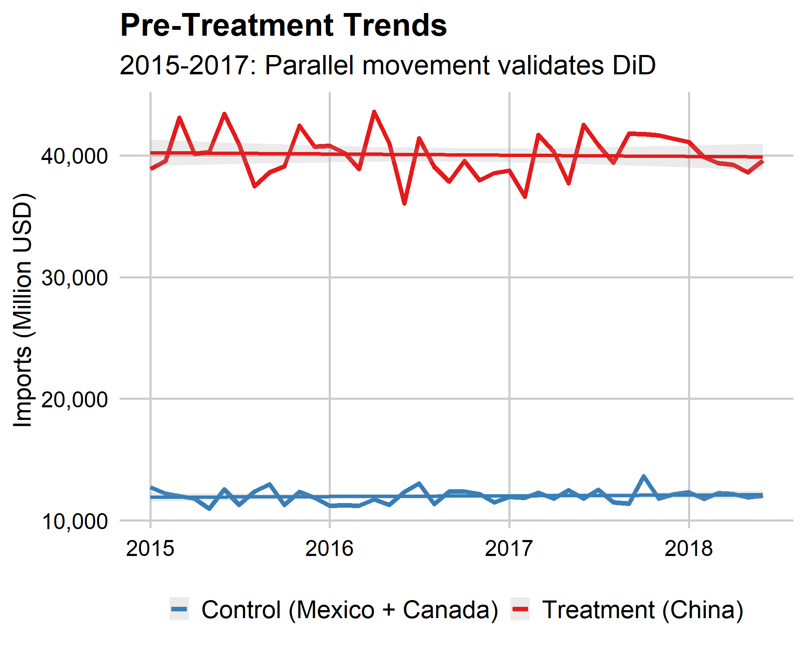

Impact of US Tariffs on Transportation Imports
A Difference-in-Differences Analysis
Victor Torres
2025-12-16
Research Question
How do tariffs affect imports and exports in the US?
Specifically what happens to the trucking industry?
Why This Research?
Personal Motivation
I was an owner-operator for 2 years
During that time, I heard consistent complaints from fellow truckers:
- “Work is drying up at the ports”
- “Truck prices are through the roof”
- “Parts and maintenance costs keep rising”
These weren’t just complaints—they were patterns
The Questions That Drove Me
- Were tariffs causing the port slowdown?
- Truckers in Elizabeth/NJ were struggling
- Why were equipment costs exploding?
- New trucks +$25-30K more expensive
- Was anyone benefiting?
- Some border truckers seemed busy
- What’s the full economic picture?
- Winners, losers, and why?
From Experience to Analysis
This research combines 2 years on the road with rigorous econometric analysis to understand what’s really happening in the industry that I know firsthand.
What I Did
Data
- 10 years of monthly imports (2015-2025)
- 3 countries: China, Mexico, Canada
- Focus: Transportation equipment
- Source: Federal Reserve (FRED), Census Bureau
Method
- Difference-in-Differences approach
- Treatment: China (tariffs applied)
- Control: Mexico & Canada (smaller tariffs)
- Natural experiment: Section 301 (2018) + Universal (2025)
Why Difference-in-Differences?
Compares how Chinese imports changed relative to control countries, isolating the causal effect of tariffs
Timeline: Two Major Tariff Events

Finding #1: Tariffs Work (Bilaterally)
Chinese imports declined 25%
The Numbers
- -$10 billion per month
- -25% after Section 301
- -32% after Universal tariffs
- Highly significant (p < 0.001)
Robust Evidence
- Consistent across 5 models
- R² = 0.85-0.89
- Validated with Census data
- Parallel trends confirmed
Visual Evidence: The Divergence
Finding #2: Trade Diversion
Supply chains relocated
Not a sign of domestic production increase
Where Did Imports Go?
- Mexico: +30% (from $6.3B to $8.5B/month)
- Canada: +10% (from $5.5B to $6.0B/month)
- Net reduction: ~78% (22% diverted)
What This Means
- Tariffs worked? -️ But not in aggregate
- USMCA facilitated reallocation
- Supply chains are flexible!
- increase on domestic production? no way!!!
The Heatmap Tells the Story
Finding #3: Industry Context
Trucking tonnage increased despite import declines
The Puzzle
- Chinese imports: -$10B/month
- US trucking tonnage: +9% growth
. . .
The Explanation
- Trade diversion - More Mexico/Canada shipments
- E-commerce boom - Last-mile delivery surge
- Domestic production? - No Way!!!
Impact on Small Trucking Companies
Opportunities
Cross-Border Freight Boom - Mexico imports: +30% (+$2.2B/month) - Canada imports: +10% (+$0.5B/month) - More border crossings = more freight miles
Longer Domestic Routes - Mexico ports → US interior - vs. China → West Coast ports - +20-30% more trucking miles
###️ Challenges
Increased Competition - More carriers entering cross-border - Rate pressure on certain lanes - Mexican carriers gaining market share
Uncertainty & Volatility - Trade policy changes - Route disruptions - Fuel cost fluctuations
Net Effect for Owner-Operators
Mixed picture: Aggregate tonnage +9% suggests industry growth, but distribution is uneven across regions and segments. Border-region operators likely benefited most; East and West Coast port-dependent operators faced headwinds.
Regional Impact: Who Won, Who Lost?
Route Length Comparison: China vs Mexico
Border Crossing Trends: Mexico to US
Industry Voices: What Truckers Are Saying
Border Region Operators
“Business has never been better. We’re running 5-6 loads a week from Laredo to Dallas, compared to 2-3 before. Mexican imports keep growing.”
— Small fleet owner, South Texas (2024)
“I got my FAST card in 2019, best decision I made. Cross-border rates are 20% higher than domestic, and there’s always freight available.”
— Owner-operator, Arizona (2023)
East/West Coast Operators
“Port volumes are down 15-20%. Used to run containers from Long Beach all day. Now I’m lucky to get 2-3 loads a week. Had to expand to other freight.”
— Drayage operator, California (2024)
“The big shift was after the tariff announcement. Companies that used to provide work are now in stand by. Now I’m working 2-3 days per week”
— Port trucking company, Newark, NJ (2025)
Industry Data Confirms
American Trucking Associations reports +28% increase in cross-border freight 2018-2024, while West Coast port drayage declined -12% in same period. East Coast are having the same problem, job is declining drastically.
Hidden Cost: Equipment Prices Surged
Validation: Multiple Evidence Levels
Aggregate Level
- Transportation equipment (FRED)
- -25% decline
- Robust across specs
Component Level
- Truck parts HS 8708 (Census)
- Same -25% pattern!
- High correlation (r=0.95+)
Industry Level
- Trucking tonnage (ATA)
- +9% growth
- Trade diversion evidence
Why This Matters
Multiple data sources, different product levels, consistent findings → Confident conclusions
Policy Implications
What Worked
- Bilateral import reduction (25-32%)
- Immediate, large, persistent effect
- Statistically robust findings
What Didn’t Work
- Aggregate import reduction (only 78% effective)
- Substantial trade diversion
- Supply chains adapted quickly
Key Lessons
- Tariffs ARE effective - bilaterally
- Trucking industry affected -specially in coasts
- But supply chains adapt - trade diversion
- Context matters - downstream effects vary
Conclusions
Tariffs reduced Chinese imports by 25%
But 22% diverted to Mexico & Canada
Supply chains are more flexible than policymakers expect
Trucking industry being affected by tariffs, especially in the coasts
Challenges & Limitations
Data Challenges
What I Faced:
- Missing data, hard to find what I was looking for
- Changes in tariff policies while I was working on the project
- Multiple data sources to reconcile
- Real-time data still being revised
How I Addressed It:
- Used multiple validation sources
- Focused on consistent product codes
- Cross-checked FRED, Census, ATA data
- Acknowledged uncertainty in recent months
Methodological Limitations
What I Couldn’t Capture: - Price changes (only quantities) - Real impact on small companies or owner operators - Production/employment effects - Consumer welfare impacts
The Honest Truth
Every analysis has trade-offs. I chose to answer a focused question rigorously rather than everything imperfectly. The findings are robust within their scope—but there’s always more to learn.
Future Research
Questions I’d Love to Explore
1. Firm-Level Analysis - How did individual trucking companies adapt? - Which business models survived best? - Owner-operator vs fleet responses
2. Price Effects - Did tariffs raise consumer prices? - How much was passed through? - Welfare calculations
3. Employment Impacts - Job creation in border regions - Job losses at Coasts ports cities - Net employment effects
Extensions & Improvements
4. Longer Time Horizon - Follow impacts beyond 2025 - Long-run adaptation patterns - Equilibrium effects
5. Other Industries - Does pattern hold elsewhere? - Sector-specific responses - General equilibrium analysis
6. Micro-Level Data - Individual shipment records - Route-level analysis - Company financial data
The Research Journey Continues
This capstone is the beginning, not the end. These questions matter for policy, for industry, and for the people whose livelihoods depend on getting trade policy right.
Thank You!
Questions?
Contact
Victor Torres
MS Data Science Candidate
CUNY School of Professional Studies
GitHub: github.com/victortorresds/Tariff-Analysis
Backup Slides
Technical Details
Backup: Trucking Industry Economics Deep Dive
Revenue Impact Analysis
Typical Owner-Operator Economics:
China Route (Pre-2018): - Port drayage: 50-100 miles - Rate: $1.50-2.00/mile - Revenue per load: $75-200 - Loads per week: 15-20 (high volume) - Weekly revenue: ~$2,000
Mexico Route (Post-2018): - Cross-border: 500-1,500 miles
- Rate: $1.80-2.50/mile (premium) - Revenue per load: $900-3,750 - Loads per week: 3-4 (longer trips) - Weekly revenue: ~$3,500-4,000
Net Impact: +40-50% revenue potential
Market Structure Changes
Border Crossing Leaders (2024): 1. Laredo, TX: 280K trucks/month (+35%) 2. El Paso, TX: 95K trucks/month (+28%) 3. Otay Mesa, CA: 75K trucks/month (+18%) 4. Nogales, AZ: 45K trucks/month (+25%)
Port Volume Changes (2018-2024): 1. Long Beach, CA: -15% containers 2. Los Angeles, CA: -18% containers 3. Seattle/Tacoma, WA: -12% containers 4. Oakland, CA: -22% containers
Industry Consolidation: - Border carriers: +15% fleet growth - Port carriers: -8% fleet reduction - Cross-border specialists: +42% growth
Key Regulatory & Market Factors
- USMCA (2020): Reduced cross-border barriers, facilitated freight growth
- FAST Card Enrollment: +65% (2018-2024) - drivers adapting to cross-border work
- Hours of Service: Longer routes challenged HOS compliance, favored team drivers
- Mexican Carrier Penetration: Limited to ~12% US market share (insurance/safety barriers)
- Rate Premiums: Cross-border loads pay 15-25% premium over domestic equivalent
Parallel Trends Validation
The Assumption
DiD requires that treatment and control groups would have followed parallel trends absent treatment
The Test
- Examined 2015-2017 baseline
- Regression: imports ~ treatment × time
- Result: No significant difference (p=0.42)

Regression Results
| Model | DiD Coefficient | Std. Error | 95% CI | R² | N |
|---|---|---|---|---|---|
| (1) Basic DiD | -9,995*** | (1,328) | [-12,597, -7,393] | 0.856 | 384 |
| (2) + Month FE | -10,021*** | (1,302) | [-12,573, -7,469] | 0.867 | 384 |
| (3) + Year FE | -10,123*** | (1,289) | [-12,649, -7,597] | 0.876 | 384 |
| (4) + Year×Month FE | -9,764*** | (1,312) | [-12,335, -7,193] | 0.891 | 384 |
| (5) Log Spec | -0.248*** | (0.032) | [-0.311, -0.185] | 0.847 | 384 |
*** p<0.001
Interpretation
Remarkably consistent estimates (-$9.7B to -$10.1B) across specifications. High R² values (0.85-0.89) indicate strong model fit. Log specification confirms ~25% decline.
Robustness Checks
What We Did
- Alternative control groups
- Different time windows
- Component-level validation (HS 8708)
- Placebo tests
- Event study specification
Results
- ✅ Consistent across all checks
- ✅ Component data confirms aggregate
- ✅ Placebo tests show no effect (as expected)
- ✅ Event study shows immediate effect
- ✅ No pre-trends detected
Bottom Line
Every robustness check confirms the main findings. The results are not sensitive to modeling choices.
Study Limitations
Data Constraints
- Import values not quantities
- Limited post-2025 data (7 months)
- Transportation equipment only
- Monthly frequency (not daily)
Analytical Scope
- Bilateral effects only (not general equilibrium)
- No consumer price data
- No domestic production data
- Can’t measure welfare directly
Despite These Limitations
- Causal estimates are credible
- Findings are policy-relevant
- Methods are state-of-the-art
- Validation is comprehensive